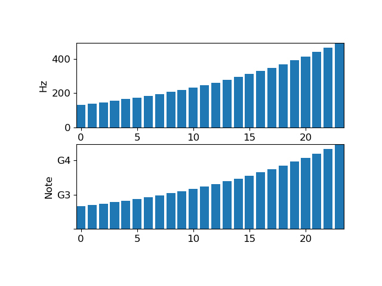

librosa.display.NoteFormatter¶
-
class
librosa.display.NoteFormatter(octave=True, major=True)[source]¶ Ticker formatter for Notes
- Parameters
- octavebool
If True, display the octave number along with the note name.
Otherwise, only show the note name (and cent deviation)
- majorbool
If True, ticks are always labeled.
If False, ticks are only labeled if the span is less than 2 octaves
Examples
>>> import matplotlib.pyplot as plt >>> values = librosa.midi_to_hz(np.arange(48, 72)) >>> plt.figure() >>> ax1 = plt.subplot(2,1,1) >>> ax1.bar(np.arange(len(values)), values) >>> ax1.set_ylabel('Hz') >>> ax2 = plt.subplot(2,1,2) >>> ax2.bar(np.arange(len(values)), values) >>> ax2.yaxis.set_major_formatter(librosa.display.NoteFormatter()) >>> ax2.set_ylabel('Note') >>> plt.show()
-
__init__(self, octave=True, major=True)[source]¶ Initialize self. See help(type(self)) for accurate signature.
Methods
__init__(self[, octave, major])Initialize self.
create_dummy_axis(self, \*\*kwargs)fix_minus(self, s)Some classes may want to replace a hyphen for minus with the proper unicode symbol (U+2212) for typographical correctness.
format_data(self, value)Returns the full string representation of the value with the position unspecified.
format_data_short(self, value)Return a short string version of the tick value.
format_ticks(self, values)Return the tick labels for all the ticks at once.
get_offset(self)set_axis(self, axis)set_bounds(self, vmin, vmax)set_data_interval(self, vmin, vmax)set_locs(self, locs)set_view_interval(self, vmin, vmax)Attributes
axislocs